SECCIÓN 6A
SISTEMA DE DIRECCIÓN ASISTIDA
ESPECIFICACIONES
Especificaciones de apriete de la sujeción
| Aplicación | N•m | Árbol de transmisión izquierdo | Articulación |
| Rácor de la tubería de presión de la bomba de la dirección asistida | 28 | 21 | - |
| Rácor de la tubería de presión del mecanismo de la dirección asistida | 28 | 21 | - |
| Rácor de la tubería de retorno del mecanismo de la dirección asistida | 28 | 21 | - |
| Tuerca de la abrazadera de la tubería de presión de la dirección asistida | 8 | - | 71 |
| Tuerca de la abrazadera de la tubería de retorno de la dirección asistida | 8 | - | 71 |
HERRAMIENTAS ESPECIALES
Tabla de herramientas especiales
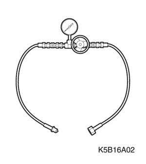
 
| DW310-030A Kit del manómetro de comprobación de la presión |
ESQUEMA Y DIAGRAMA DE CABLEADO
Interruptor de presión de la dirección asistida
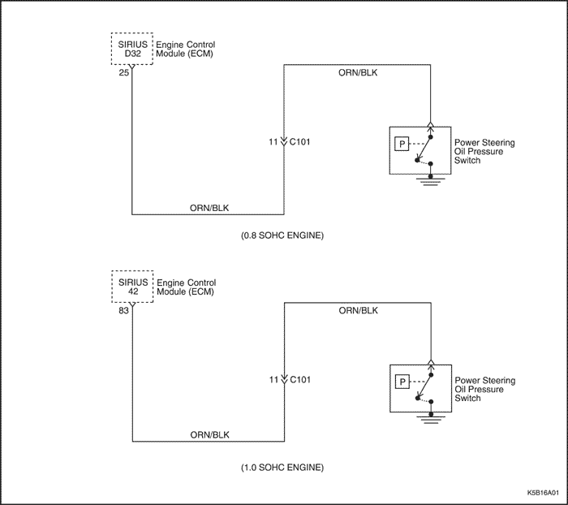
LOCALIZACION DE COMPONENTES
Sistema de servodirección
(Indicado para conducción a izquierdas, conducción a derechas similar)
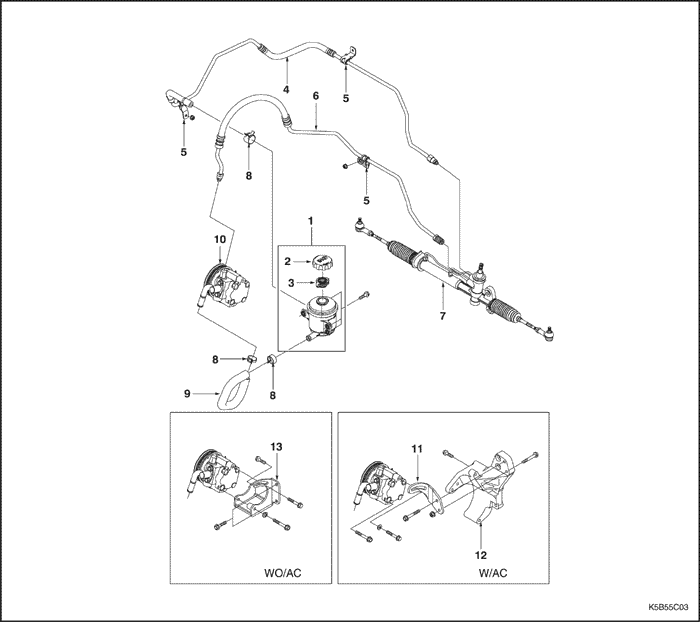
- Depósito del aceite de la dirección asistida
- Tapón del depósito de aceite de la dirección asistida
- Protector del depósito de aceite de la dirección asistida
- Tubería de retorno de caudal
- Abrazadera, mordaza
- Tubo de presión
- MECANISMO DE LA DIRECCIÓN ASISTIDA
- Clip
- Manguito de aspiración del depósito
- Bomba de servodirección
- Fijación de la dirección asistida
- Soporte principal (A/A y D/A)
- Soporte de la bomba de la dirección asistida (sin A/A)
DIAGNÓSTICO
Prueba de presión en el sistema de servodirección
Compruebe la presión del líquido de la forma siguiente para determinar si el problema reside en la bomba o en el mecanismo.
Herramientas necesarias
DW310-030A Kit de comprobación de la presión
Procedimiento de comprobación
- Compruebe el nivel del aceite de la dirección asistida y la tensión de la correa de accionamiento. Consulte el apartado "Comprobación y adición de líquido" de esta sección y la Sección 6B, Bomba de la dirección asistida.
- Desconecte de la bomba la tubería de alta presión. Utilice un pequeño recipiente para recoger el líquido.
- Conecte el manguito del kit de comprobación de la presión DW310-030A al tubo de presión de la dirección asistida desde la bomba de la misma.
- Coloque la palanca selectora de marchas en estacionamiento (vehículos con caja de cambios automática) o punto muerto (vehículos con caja de cambios manual). Ponga el freno de estacionamiento.
- Abra completamente la válvula del manómetro.
- Ponga en marcha el motor y déjelo a ralentí.
- Gire el volante de tope a tope varias veces para calentar el aceite de la dirección y hacer que mantenga la temperatura de funcionamiento normal.
Aviso: La bomba de la dirección asistida puede sufrir daños si se mantiene cerrada la válvula completamente durante más de 10 segundos.
- Cierre la válvula del manómetro completamente y lea la presión.
| Presión de la válvula de descarga de la bomba | 5.491,7 kPa (796,5 psi) |
- Abra inmediatamente y de forma total la válvula del manómetro y lea la presión.
| Presión de la bomba | 343,2 kPa (49,8 psi) |
- Si la presión está dentro de los límites especificados, la avería no está en la bomba. En caso contrario, sustituya la bomba de la dirección asistida.
Prueba de fugas en el sistema de servodirección
Procedimiento general
Compruebe lo siguiente:
- El exceso de llenado en el depósito del líquido.
- La entrada de aire o el rebose del líquido.
- La existencia de conexiones flojas en los manguitos.
- Fugas en las juntas de las manguetas, de los ajustadores y de la barra de torsión.
- La existencia de daños en las superficies de cierre de los componentes.
Importante: Compruebe el punto exacto de la fuga. El punto por el que gotea el líquido no corresponde necesariamente al punto en el que el sistema presenta la fuga. Cuando sea necesario efectuar un mantenimiento, limpie la zona de la fuga durante el proceso de desmontaje, sustituya el retén por el que se produce la fuga, compruebe si las superficies de cierre de los componentes están dañadas y apriete de nuevo los tornillos al par especificado, cuando así se requiera.
Comprobación de fugas externas
El propósito de este procedimiento es ubicar el lugar exacto de la fuga. En algunos casos, la fuga puede localizarse fácilmente, pero las fugas de infiltración pueden resultar difíciles de localizar. Para localizar fugas de infiltración, utilice el siguiente método:
- Con el motor apagado, limpie y seque completamente el sistema de la dirección asistida.
- Compruebe el nivel de líquido de la dirección asistida en el depósito de la bomba. Ajuste el nivel si fuera necesario. Consulte el apartado "Comprobación y adición de fluido" de esta sección.
Aviso: No mantenga un tiempo prolongado el volante en el tope, ya que esto puede ocasionar daños en la bomba de la dirección asistida.
- Ponga el motor en marcha. Gire el volante a izquierdas y derechas, de tope a tope varias veces.
- Ponga el motor en marcha. Gire el volante a izquierdas y derechas, de tope a tope varias veces.
- Localice la zona exacta de la fuga y repárela.
Comprobación de la tensión de la correa de la dirección asistida
- Compruebe si la correa de la dirección asistida está desgastada o dañada (si fuera necesario, sustitúyala).
- Empuje la parte señalada con una flecha en el dibujo para comprobar si la correa está floja o bien tensada con una fuerza aproximada de 10 kg (22 lb).
| Flojedad de la correa de la dirección asistida | Nueva | 8.0 - 9.0 mm (0,31 - 0,35 pulg.) |
| Vieja | 9.0 - 10.0 mm (0,35 - 0,39 pulg.) |
MANTENIMIENTO Y REPARACIÓN
servicio con vehículo en marcha
Purga del sistema de servodirección
Si ha sido necesario efectuar alguna labor de mantenimiento en el sistema hidráulico de la dirección asistida, no se puede obtener una lectura exacta del nivel del aceite hasta haber purgado el aire del sistema.
Para purgar el aire del sistema, siga los pasos que se describen a continuación:
- Gire las ruedas completamente hacia la izquierda y añada aceite de dirección asistida hasta la señal de MIN del indicador del nivel de aceite.
Aviso: Cuando añada o cambie completamente el aceite, utilice siempre aceite para dirección asistida DEXRON®-IID. Si no se utiliza el aceite adecuado, se dañarán los manguitos y retenes y habrá fugas de líquido.
- Ponga el motor en marcha. Con el motor en marcha y a ralentí rápido, compruebe de nuevo el nivel de aceite. Si fuera necesario, añada aceite hasta llegar a la marca MIN.
- Purgue el sistema girando las ruedas de lado a lado sin llegar al tope en ambos extremos. Mantenga el nivel de aceite en la marca MIN. El aire deberá eliminarse del sistema antes de que pueda la dirección funcione con normalidad.
- Vuelva a girar las ruedas hasta su posición central. Mantenga el motor encendido durante 2 ó 3 minutos.
- Efectúe una prueba en carretera con el coche para asegurarse de que la dirección funciona con normalidad y que no hace ruido.
- Vuelva a verificar el nivel de aceite tal como se describe en los pasos 1 y 2. Asegúrese de que el nivel del líquido esté en la señal de MAX después que el sistema se haya estabilizado a su temperatura normal de funcionamiento. Añada fluido según necesidades.
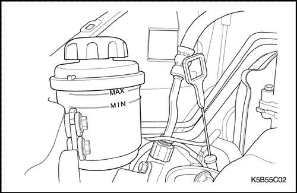
Comprobar y añadir líquido
Aviso: Cuando añada o cambie completamente el aceite, utilice siempre aceite para dirección asistida DEXRON®-IID. Si no se utiliza el aceite adecuado, se dañarán los manguitos y retenes y habrá fugas de líquido.
- El nivel de líquido de la dirección asistida se indica mediante marcas en el depósito transparente de líquido o mediante marcas en un indicador de nivel en la tapa del depósito.
- Si el aceite está caliente, su nivel debe estar entre las marcas de MAX y MIN. Añada fluido según necesidades.
- Si el aceite está frío, su nivel debería quedar por debajo de la marca de MIN. Añada fluido según necesidades.
- Si el cambio del nivel de aceite está dentro de los 5 mm (0,20 pulg.), el nivel de aceite debe estar entre las marcas de MAX y MIN. Si el cambio de aceite supera los 5 mm (0,20 pulg.), purgue el sistema de dirección asistida.
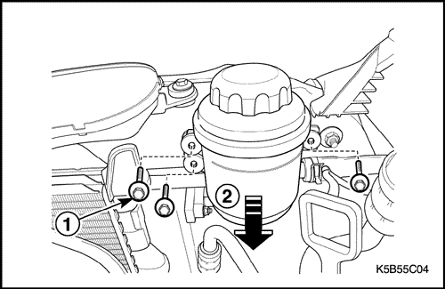
Depósito de líquido
Procedimiento de desmontaje
- Desmonte el depósito de aceite.
- Quite los tornillos del depósito de aceite (1).
- Desmonte el depósito de aceite y tire de él hacia el motor (2).
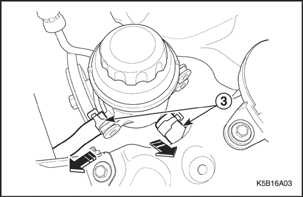
- Afloje las abrazaderas de los manguitos y desconéctelos (3).
- Tape las aberturas de los dos manguitos para evitar la pérdida de aceite y la entrada de suciedad.
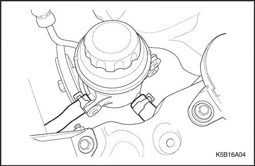
procedimiento de montaje
- Conecte los dos manguitos y asegure las abrazaderas.
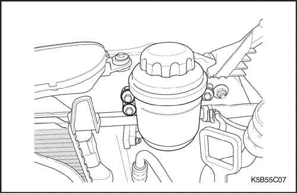
- Coloque los tornillos del depósito.
Apretar
Apriete los tornillos del depósito de aceite hasta 8 N•m (71 lb-pulg.).
Aviso: Cuando añada o cambie completamente el aceite, utilice siempre aceite para dirección asistida DEXRON®-IID. Si no se utiliza el aceite adecuado, se dañarán los manguitos y retenes y habrá fugas de líquido.
- Llene el depósito con aceite para la dirección asistida.
- Compruebe la existencia de fugas. Si las hubiera, corrija la causa de las mismas y purgue el sistema. Consulte el apartado "Purga del sistema de la dirección asistida"de esta sección.
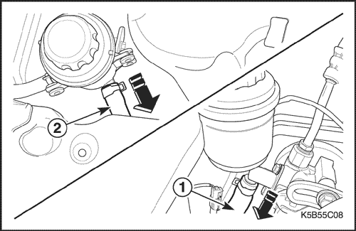
Mangueras y tubos
Manguito de aspiración del depósito
Procedimiento de desmontaje
- Quite los tornillos del depósito de aceite para desmontar fácilmente el manguito de aspiración.
- Desmonte los manguitos de aspiración de la dirección asistida.
- Desconecte el manguito de aspiración de la conexión de admisión de la bomba de la dirección asistida y vacíe el aceite de la dirección asistida (1).
- Recoja el líquido que salga en una bandeja de drenaje.
- Desconecte el manguito de aspiración del depósito del aceite de la dirección asistida (2).
- Tape las aberturas en la bomba y el depósito de aceite de la dirección para evitar la pérdida de aceite o la entrada de suciedad.
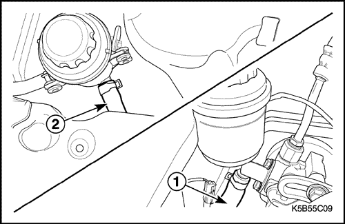
procedimiento de montaje
Aviso: Cuando añada o cambie completamente el aceite, utilice siempre aceite para dirección asistida DEXRON®-IID. Si no se utiliza el aceite adecuado, se dañarán los manguitos y retenes y habrá fugas de líquido.
- Conecte el manguito de aspiración a la conexión de admisión de la bomba de la dirección asistida.
- Conecte el manguito de aspiración al depósito del aceite de la dirección asistida.
- Coloque los tornillos del depósito.
Apretar
Apriete los tornillos del depósito de aceite hasta 8 N•m (71 lb-pulg.).
- Llene el depósito con aceite para la dirección asistida.
- Compruebe la existencia de fugas. Si las hubiera, corrija la causa de las mismas y purgue el sistema. Consulte el apartado "Purga del sistema de la dirección asistida"de esta sección.
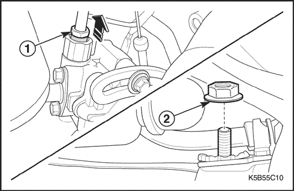
Tubo de presión de la dirección asistida
(Indicado para conducción a izquierdas, conducción a derechas similar)
Procedimiento de desmontaje
- Retire la tubería de presión de la dirección asistida.
- Retire el rácor de la tubería de presión de la conexión de salida de la bomba de la dirección asistida (1).
- Levante y apoye el vehículo adecuadamente.
- Retire la tuerca de la abrazadera del tubo de presión (2).
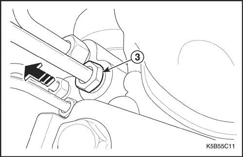
- Desconecte del mecanismo de la dirección asistida el tubo de presión (3).
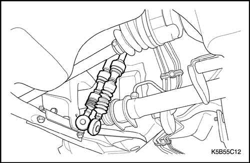
- Retire el cable de mando del cambio de marchas y tire de el hacia abajo (hacia los bajos de la carrocería). Para vehículos equipados con motor 0.8 SOHC, consulte la sección 5B1, Caja de cambios manual de cinco velocidades (Y4A). Para el motor 1.0 SOHC, consulte la sección 5B2, Caja de cambios manual de cinco velocidades (Y4B).
- Retire el tubo de presión de la dirección asistida.
- Tape las aberturas en la bomba y el mecanismo de la dirección para evitar la pérdida de aceite o la entrada de suciedad.
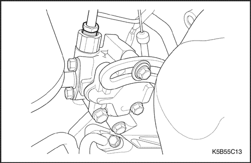
procedimiento de montaje
- Monte el tubo de presión de la bomba de la dirección asistida.
- Monte el cable de mando del cambio de marchas. Para vehículos equipados con motor 0.8 SOHC, consulte la sección 5B1, Caja de cambios manual de cinco velocidades (Y4A). Para el motor 1.0 SOHC, consulte la sección 5B2, Caja de cambios manual de cinco velocidades (Y4B).
- Conecte el tubo de presión a la bomba de la dirección.
Apretar
Apriete el rácor del tubo de presión de la bomba de la dirección hasta 28 N•m (21 lb-pie).
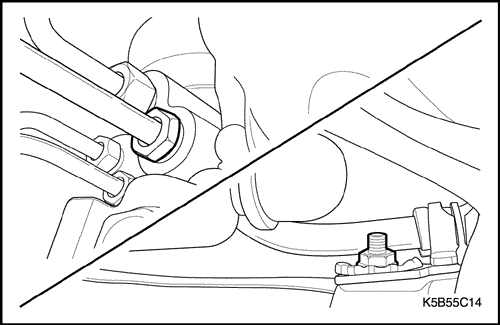
- Conecte el tubo de presión al mecanismo de dirección.
Apretar
Apriete el rácor del tubo de presión hasta 28 N•m (21 lb-pie).
- Conecte el tubo de presión con la tuerca de la abrazadera.
Apretar
Apriete la tuerca de la abrazadera del tubo de presión hasta 8 N•m (71 lb-pie).
Aviso: Cuando añada o cambie completamente el aceite, utilice siempre aceite para dirección asistida DEXRON®-IID. Si no se utiliza el aceite adecuado, se dañarán los manguitos y retenes y habrá fugas de líquido.
- Llene el depósito con aceite para la dirección asistida.
- Compruebe la existencia de fugas. Si las hubiera, corrija la causa de las mismas y purgue el sistema. Consulte el apartado "Purga del sistema de la dirección asistida"de esta sección.
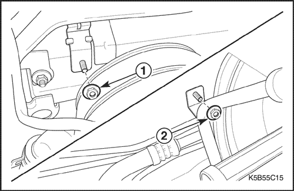
Tubo de retorno de caudal de la dirección asistida
(Indicado para conducción a izquierdas, conducción a derechas similar)
Procedimiento de desmontaje
- Desmonte el tubo de retorno de caudal de la dirección asistida.
- Quite la tuerca de la abrazadera del tubo de retorno situado debajo del faro del lado del pasajero delantero (1).
- Quite la tuerca de la abrazadera situada en la carrocería, debajo del colector de admisión (2).
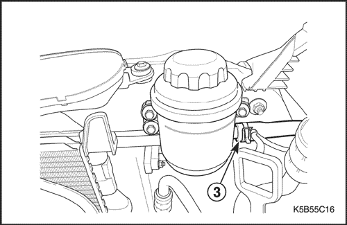
- Afloje la abrazadera del manguito de retorno y desconéctelo (3).
- Levante y apoye el vehículo adecuadamente.
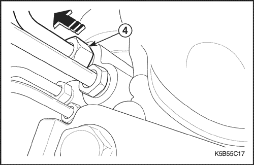
- Desconecte del mecanismo de la dirección la tubería de retorno (4).
- Tape las aberturas en el mecanismo y el depósito de aceite de la dirección para evitar la pérdida de aceite o la entrada de suciedad.
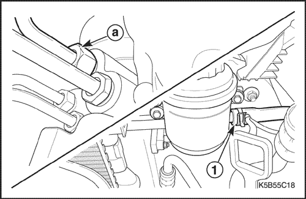
procedimiento de montaje
- Monte la tubería de retorno.
- Conecte la tubería de retorno al mecanismo de dirección (a).
Apretar
Apriete el rácor de la tubería de retorno hasta 28 N•m (21 lb-pie).
- Baje el vehículo.
- Conecte la tubería de retorno al depósito de aceite (1).
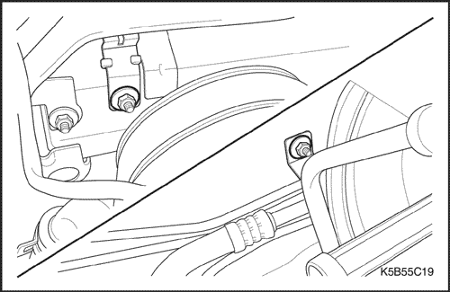
- Conecte el manguito de la tubería de retorno con la abrazadera.
Apretar
Apriete la tuerca de la abrazadera hasta 8 N•m (71 lb-pulg.).
Aviso: Cuando añada o cambie completamente el aceite, utilice siempre aceite para dirección asistida DEXRON®-IID. Si no se utiliza el aceite adecuado, se dañarán los manguitos y retenes y habrá fugas de líquido.
- Llene el depósito con aceite para la dirección asistida.
- Compruebe la existencia de fugas. Si las hubiera, corrija la causa de las mismas y purgue el sistema. Consulte el apartado "Purga del sistema de la dirección asistida" de esta sección.
DESCRIPCIÓN GENERAL Y FUNCIONAMIENTO DEL SISTEMA
Sistema de servodirección
Descripción general
El sistema de dirección asistida está formado por tres componentes: la bomba de la dirección, el depósito de aceite de la dirección asistida y el mecanismo de piñón y cremallera de la dirección. La bomba de la dirección asistida es una bomba de paletas que suministra presión hidráulica al sistema y que es accionada por el motor. Absorbe líquido del depósito de aceite de la dirección que, a su vez, está conectado al mecanismo de la dirección asistida. Una válvula de descarga de presión dentro de la válvula reguladora de caudal limita la presión de la bomba. El mecanismo de piñón y cremallera tiene una válvula reguladora giratoria que dirige el aceite hidráulico procedente de la bomba a un lado u otro del pistón de la cremallera. Este pistón de la cremallera va unido a ésta formando parte integral de la misma. Este pistón convierte la presión hidráulica en una fuerza lineal que desplaza la cremallera hacia la izquierda o derecha. A continuación, la fuerza se transmite a través de los tirantes y sus extremos a las manguetas de la dirección, que hacen girar las ruedas.